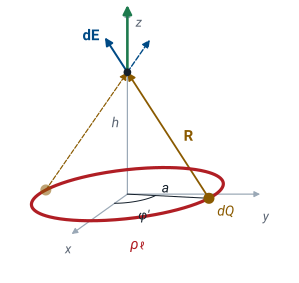
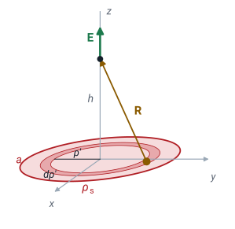
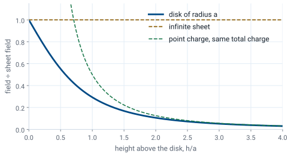
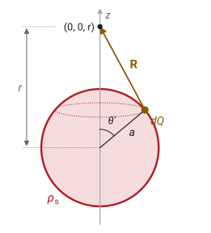
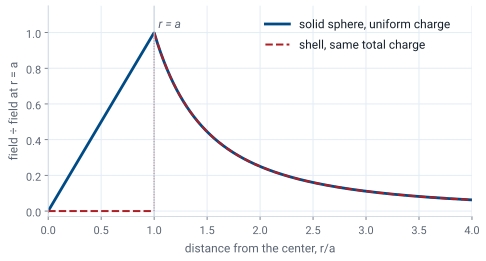

L19 - Surface and Volume Charge#
Surface and Volume Charge
Today we integrate Coulomb’s law over a ring, a disk, a sheet, and a sphere.
Lesson 19 · Module 2: Electrostatics · Maj Ellis · Dr. Neil Rogers
Learning Objectives
- I can apply Coulomb's Law to use direct integration to calculate the electric field due to charge density in various geometries, including rectangular, cylindrical, and spherical coordinate systems.
Lesson 18 built the field of any charge distribution as an integral of Coulomb’s law, and evaluated it for a straight line of charge. Today we apply the same three steps to the other shapes the course returns to: a ring of charge, a disk, an infinite sheet, a spherical shell, and a solid sphere. Each one takes its own coordinate system, and each shows a different way that symmetry cancels part of the integral before we evaluate it. The results are worth remembering, and so is their shape, because Lesson 20 reaches several of them again by a much shorter road.
Where We Were
Lesson 18: direct integration. Each element \(dQ\) is a point charge:
Draw the picture and choose coordinates.
Write \(dQ\) and \(\mathbf{R}\).
Use symmetry, then integrate each component.
Lesson 18 treated each small piece of a charge distribution as a point charge \(dQ\) at the source point \(\mathbf{r}'\), and added their fields at the field point \(\mathbf{r}\) with an integral. The three steps never change. The work is in choosing coordinates that fit the shape, so that the limits of the integral are constants, and in spotting the components that cancel. For a finite line of charge, the axial components canceled in pairs and left a field pointing straight out from the line; as the line grew long, it became \(\rho_\ell/2\pi\epsilon\rho\).
A Ring of Charge: Set Up

A ring of radius \(a\) lies in the \(xy\) plane, centered on the origin, and carries a uniform line charge \(\rho_\ell\). We want the field at height \(h\) on the \(z\) axis. The shape is a circle, so we use cylindrical coordinates. An element of the ring at angle \(\phi'\) has length \(a\ d\phi'\), so it holds \(dQ = \rho_\ell\ a\ d\phi'\). The field point is \(\mathbf{r} = h\ \hat{\mathbf{z}}\) and the element is at \(\mathbf{r}' = a\ \hat{\boldsymbol{\rho}}'\), so \(\mathbf{R} = -a\ \hat{\boldsymbol{\rho}}' + h\ \hat{\mathbf{z}}\). Every element is the same distance from the field point, so \(R\) is a constant. The prime on \(\hat{\boldsymbol{\rho}}'\) matters: it is the radial direction at the element, and it changes as the element moves around the ring. The figure shows the element and the one opposite it. Their radial parts cancel, and their \(z\) parts add.
Integrating Around the Ring
Since \(R\) is constant, everything but \(\mathbf{R}\) comes outside the integral. The \(\hat{\mathbf{z}}\) term is easy: \(\hat{\mathbf{z}}\) does not depend on \(\phi'\), and its integral is \(2\pi h\ \hat{\mathbf{z}}\). The \(\hat{\boldsymbol{\rho}}'\) term needs care. Because \(\hat{\boldsymbol{\rho}}'\) changes direction around the ring, it cannot come outside the integral; we first write it in Cartesian unit vectors, which are constant: \(\hat{\boldsymbol{\rho}}' = \hat{\mathbf{x}}\cos\phi' + \hat{\mathbf{y}}\sin\phi'\). Over a full turn, both \(\cos\phi'\) and \(\sin\phi'\) integrate to zero, which is the symmetry argument done in algebra. The \(2\pi\) from the \(z\) term cancels against the \(4\pi\), leaving the result. Far from the ring, \(h \gg a\), it becomes \(Q/4\pi\epsilon h^2\) with \(Q = 2\pi a\rho_\ell\), the field of a point charge.
Worked Example: A Quarter Ring
Only \(0 \le \phi' \le \pi/2\) is charged, so the radial terms no longer cancel:
Worked example — a quarter of the ring
Keep the ring, but charge only the quarter in the first quadrant, \(0 \le \phi' \le \pi/2\). Steps 1 and 2 are unchanged: \(dQ\) and \(\mathbf{R}\) are the same as for the full ring. Only the limits change.
The \(\hat{\mathbf{z}}\) term integrates to \((\pi/2)\ h\ \hat{\mathbf{z}}\). The radial term no longer cancels, because there is no charge on the opposite side to balance it:
Multiplying by \(-a\) and collecting terms gives the result above. The field leans away from the charged quarter, toward \(-\hat{\mathbf{x}}\) and \(-\hat{\mathbf{y}}\), exactly as a picture of the charge would suggest. A partial ring is the case where writing \(\hat{\boldsymbol{\rho}}'\) in Cartesian components is not optional.
A Disk of Charge: Set Up

Now fill the ring in. A disk of radius \(a\) in the \(xy\) plane carries a uniform surface charge \(\rho_s\), and we want the field at height \(h\) on its axis. The area element in cylindrical coordinates is \(ds = \rho'\ d\rho'\ d\phi'\), from Lesson 17, so \(dQ = \rho_s\ \rho'\ d\rho'\ d\phi'\). The element sits at \(\mathbf{r}' = \rho'\ \hat{\boldsymbol{\rho}}'\), so \(\mathbf{R} = -\rho'\ \hat{\boldsymbol{\rho}}' + h\ \hat{\mathbf{z}}\). This is the ring’s setup with the fixed radius \(a\) replaced by the variable \(\rho'\), and that is the useful way to see the disk: a stack of concentric rings, each of width \(d\rho'\), and each already solved.
Integrating Over the Disk
The radial term integrates to zero over \(\phi'\), exactly as it did for the ring, so only \(E_z\) remains, with integrand \(\rho_s\ h\ \rho'/4\pi\epsilon(\rho'^2 + h^2)^{3/2}\). The \(\phi'\) integral gives \(2\pi\). For the \(\rho'\) integral, substitute \(u = \rho'^2 + h^2\); then \(\rho'\ d\rho' = du/2\), and \(\int u^{-3/2}\ du/2 = -u^{-1/2}\). Evaluating from \(\rho' = 0\), where the bracket is \(-1/h\), to \(\rho' = a\) gives \(1/h - 1/\sqrt{a^2 + h^2}\). Multiplying by \(h\) gives the result for a point above the disk, \(h > 0\). Below it, the field points along \(-\hat{\mathbf{z}}\) with the same magnitude.
The Infinite Sheet
Let the disk grow, \(a \to \infty\):
The field of an infinite sheet does not depend on the distance from it.
It points away from the sheet on both sides.
As \(a\) grows without bound, \(h/\sqrt{a^2 + h^2} \to 0\), and the field above the disk becomes \(\rho_s/2\epsilon\). The distance \(h\) has dropped out entirely: the field of an infinite sheet of charge is the same everywhere on each side, pointing away from a positive sheet, along \(+\hat{\mathbf{z}}\) above it and \(-\hat{\mathbf{z}}\) below. Moving away from an infinite sheet, you see a larger area of it, and that exactly balances the inverse-square law. A real sheet counts as infinite when the field point is much closer to it than to its edges. Two such sheets with opposite charges make a parallel-plate capacitor: their fields cancel outside and add to \(\rho_s/\epsilon\) between the plates, a result Lesson 25 uses.
Near and Far From the Disk

The figure plots the disk’s field divided by the sheet field \(\rho_s/2\epsilon\). Close to the surface, \(h \ll a\), the disk looks infinite and the ratio is 1. Far away, it shrinks to a point. To show that from the result, write \(h/\sqrt{a^2 + h^2} = (1 + a^2/h^2)^{-1/2}\) and expand with the binomial approximation \((1 + x)^{-1/2} \approx 1 - x/2\) for small \(x\). The field becomes \((\rho_s/2\epsilon)(a^2/2h^2) = \rho_s a^2/4\epsilon h^2\), and multiplying top and bottom by \(\pi\) shows the total charge \(Q = \pi a^2\rho_s\) over \(4\pi\epsilon h^2\): the field of a point charge. One result covers the whole range, and its two limits are the two simplest fields we know.
A Spherical Shell: Set Up

A spherical shell of radius \(a\) carries a uniform surface charge \(\rho_s\). By symmetry the field can depend only on the distance \(r\) from the center, so we place the field point on the \(z\) axis, \(\mathbf{r} = r\ \hat{\mathbf{z}}\), and lose nothing. The shape calls for spherical coordinates. From Lesson 17, the area element on a sphere of radius \(a\) is \(a^2\sin\theta'\ d\theta'\ d\phi'\). The element at polar angle \(\theta'\) is a distance \(R\) from the field point, and the triangle formed by the center, the element, and the field point has sides \(a\) and \(r\) with the angle \(\theta'\) between them, so the law of cosines gives \(R^2\). The vector itself is \(\mathbf{R} = r\ \hat{\mathbf{z}} - a\ \hat{\mathbf{r}}'\), whose \(z\) component is \(r - a\cos\theta'\).
Only the z Component Survives
The elements at the same \(\theta'\) form a ring around the \(z\) axis, the dotted band in the figure, and on each ring the components perpendicular to the axis cancel, exactly as they did for the ring of charge. Only \(E_z\) survives. Its integrand is \(dQ\) times the \(z\) component of \(\mathbf{R}\), divided by \(4\pi\epsilon R^3\). Nothing in it depends on \(\phi'\), so the \(\phi'\) integral gives \(2\pi\), which cancels the \(\pi\) in \(4\pi\) and leaves a factor of 2 in the denominator. One integral over \(\theta'\) remains.
Changing Variables
Let \(u = R^2 = r^2 + a^2 - 2ar\cos\theta'\):
The integral looks hard, but the right substitution makes it routine. Let \(u\) be the squared distance \(R^2\). Differentiating gives \(du = 2ar\sin\theta'\ d\theta'\), which is the \(\sin\theta'\ d\theta'\) already in the integrand. Solving the definition of \(u\) for \(a\cos\theta'\) gives \(a\cos\theta' = (r^2 + a^2 - u)/2r\), so the numerator \(r - a\cos\theta' = (r^2 - a^2 + u)/2r\). The limits follow from the cosine: \(\cos 0 = 1\) gives \((r - a)^2\), and \(\cos\pi = -1\) gives \((r + a)^2\). Collecting the factors \(1/2ar\) from \(du\) and \(1/2r\) from the numerator gives \(1/4ar^2\), and dividing the numerator by \(u^{3/2}\) splits the integrand into two powers of \(u\).
Evaluating the Integral
Limit |
\(\sqrt{u}\) |
Value |
|---|---|---|
upper |
\(r + a\) |
\(4a\) |
lower, outside (\(r > a\)) |
\(r - a\) |
\(-4a\) |
lower, inside (\(r < a\)) |
\(a - r\) |
\(4a\) |
Both terms are powers of \(u\), so the antiderivative is immediate. At the upper limit, \(\sqrt{u} = r + a\), and since \(r^2 - a^2 = (r - a)(r + a)\), the first term is \(-2(r - a)\); adding \(2(r + a)\) gives \(4a\). At the lower limit, \(\sqrt{u}\) is the positive square root of \((r - a)^2\), which is \(r - a\) when the field point is outside the shell and \(a - r\) when it is inside. That one difference decides everything. Outside, the first term is \(-2(r + a)\), and adding \(2(r - a)\) gives \(-4a\). Inside, the first term is \(+2(r + a)\), and adding \(2(a - r)\) gives \(+4a\).
Outside and Inside the Shell
Outside, the shell acts as a point charge \(Q = 4\pi a^2\rho_s\) at its center.
Inside, the field is zero.
Outside the shell, the bracket is \(8a\), and the field is \(\rho_s a^2/\epsilon r^2\). The total charge on the shell is its area times its density, \(Q = 4\pi a^2\rho_s\), so the field is \(Q/4\pi\epsilon r^2\) along \(\hat{\mathbf{r}}\): exactly the field of a point charge \(Q\) at the center. Inside, the bracket is zero, and so is the field, everywhere inside, not just at the center. A field point inside is closer to the near side of the shell, but the far side holds more charge, and the inverse-square law makes the two balance exactly. Both results hold only for a uniform shell, and the second is why a closed metal enclosure shields what is inside it from static fields.
A Solid Sphere, Shell by Shell
A shell of radius \(r'\) and thickness \(dr'\) holds \(dQ = \rho_v\ 4\pi r'^2\ dr'\). Only shells inside \(r\) contribute:
A solid sphere of radius \(a\) with uniform volume charge \(\rho_v\) is a nest of thin shells, and the shell result does the work. The shell between \(r'\) and \(r' + dr'\) has area \(4\pi r'^2\) and thickness \(dr'\), so it holds \(dQ = \rho_v\ 4\pi r'^2\ dr'\). A shell smaller than \(r\) acts at \(r\) as a point charge \(dQ\) at the center, and a shell larger than \(r\) contributes nothing. Outside the sphere, every shell is inside \(r\), and we integrate \(r'\) from 0 to \(a\). The total charge is \(Q = \tfrac{4}{3}\pi a^3\rho_v\), so the field is again \(Q/4\pi\epsilon r^2\). Inside, only the shells with \(r' < r\) count, and the field grows in proportion to \(r\), from zero at the center.
The Field of a Charged Sphere

The figure plots both results, divided by the field at the surface, \(Q/4\pi\epsilon a^2\). Outside, a solid sphere and a shell with the same total charge are indistinguishable: both act as a point charge at the center. They differ only inside. The shell’s field is zero everywhere within it, and the solid sphere’s field rises linearly from zero at the center to its largest value at the surface. The two curves meet at \(r = a\), so the solid sphere’s field is continuous; the shell’s jumps from zero to its full value at the surface, because a surface charge is an infinitely thin layer. Lesson 24 explains that jump.
Summary
Distribution |
Field point |
Field |
|---|---|---|
Ring, radius \(a\), \(\rho_\ell\) |
height \(h\) on the axis |
\(\hat{\mathbf{z}}\ \dfrac{\rho_\ell a h}{2\epsilon(a^2 + h^2)^{3/2}}\) |
Quarter ring, \(0 \le \phi' \le \pi/2\) |
height \(h\) on the axis |
\(\dfrac{\rho_\ell a}{4\pi\epsilon(a^2 + h^2)^{3/2}}\left(-a\hat{\mathbf{x}} - a\hat{\mathbf{y}} + \tfrac{\pi h}{2}\hat{\mathbf{z}}\right)\) |
Disk, radius \(a\), \(\rho_s\) |
height \(h > 0\) on the axis |
\(\hat{\mathbf{z}}\ \dfrac{\rho_s}{2\epsilon}\left(1 - \dfrac{h}{\sqrt{a^2 + h^2}}\right)\) |
Infinite sheet, \(\rho_s\) |
either side |
\(\pm\hat{\mathbf{z}}\ \dfrac{\rho_s}{2\epsilon}\), independent of distance |
Spherical shell, radius \(a\), \(\rho_s\) |
\(r > a\); \(r < a\) |
\(\hat{\mathbf{r}}\ \dfrac{Q}{4\pi\epsilon r^2}\); zero |
Solid sphere, radius \(a\), \(\rho_v\) |
\(r > a\); \(r < a\) |
\(\hat{\mathbf{r}}\ \dfrac{\rho_v a^3}{3\epsilon r^2}\); \(\hat{\mathbf{r}}\ \dfrac{\rho_v r}{3\epsilon}\) |
Method |
— |
\(\hat{\boldsymbol{\rho}}'\) changes with \(\phi'\): write it as \(\hat{\mathbf{x}}\cos\phi' + \hat{\mathbf{y}}\sin\phi'\) before integrating |
Practice
Where This Is Going
Lesson 20: Gauss’s law gives the line, the sheet, and the sphere in a line each.
Lesson 21: the same law, written at a point.
Today’s integrals took real work, and the most symmetric ones, the infinite line, the infinite sheet, and the sphere, gave the simplest answers. That is no accident. Lesson 20 introduces Gauss’s law, which relates the field crossing a closed surface to the charge inside it, and for exactly these shapes it reaches today’s results with almost no integration. Direct integration remains the method for everything less symmetric, such as the disk and the partial ring.
Before Lesson 20, read sections 5.5 and 5.6 of Ellingson, Electromagnetics, Vol. 1, and review surface integrals and the area elements in each coordinate system from Lesson 17.